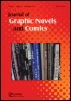
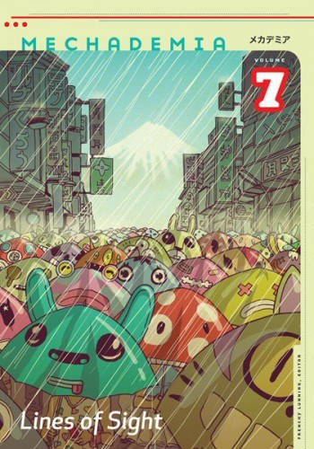

Links

Links
RESOURCES for research
Websites:
Graphic Novels research guide:
http://www.libraries.psu.edu/psul/researchguides/artsarchmusic/comics.html
How to evaluate sources:
http://www.libraries.psu.edu/psul/lls/students/research_resources/evaluate_info.html
http://www.personal.psu.edu/cdc17/annotatedbibs/Annotated_Bibliographies.html
Research guides:
http://www.libraries.psu.edu/psul/researchguides.htmlMLA Formatting and Style Guide:
http://owl.english.purdue.edu/owl/resource/747/01/
Journals:




